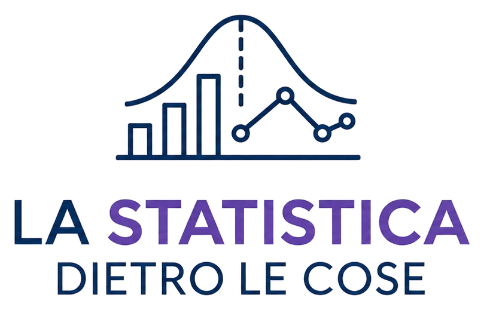

Sfida il caso
Una partita al giorno, uguale per tutti: vediamo chi arriva più lontano.
- Il mazzo del giorno Più alta o più bassa? Al primo errore è finita.
- Altri giochi in arrivo


Una partita al giorno, uguale per tutti: vediamo chi arriva più lontano.